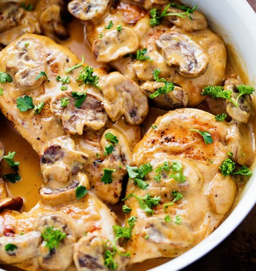

Creamy Chicken Marsala

Description
Chicken Marsala is a classic Italian dish. This creamy
chicken marsala recipe is a healthier take on classic marsala.
With healthy chicken breast and flavors of mushroom and Marsala
wine, this recipe will prove to be a family favorite.
Ingredients
- 3 table spoons olive oil
- salt and ground black pepper to taste
- 2 skinless, boneless chicken breasts, cut into cubes
- 1 onion, diced
- 1 cup sliced cremini mushrooms
- 1 (10.75 ounce) can condensed cream of mushroom soup
- 1 cup Marsala wine
Steps
- Heat olive oil in a skillet over medium-high heat
- Season chicken with salt and pepper; cook in hot oil until browned, about 3 to 5 minutes
- Stir in onion and mushrooms with the chicken; continue cooking until the onion is translucent, about 5 to 7 minutes
- Pour cream of mushroom soup and Marsala wine over the chicken mixture.
- Cook until hot and the chicken is fully cooked, about 3 to 5 minutes.